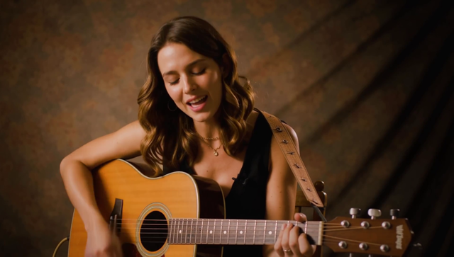
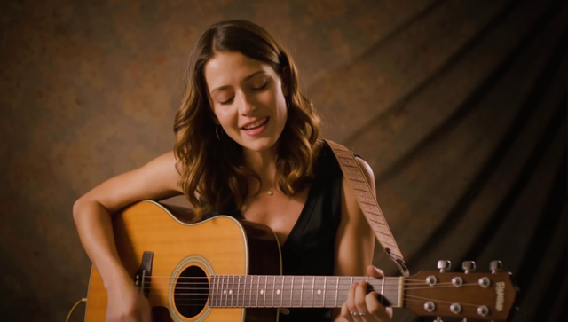
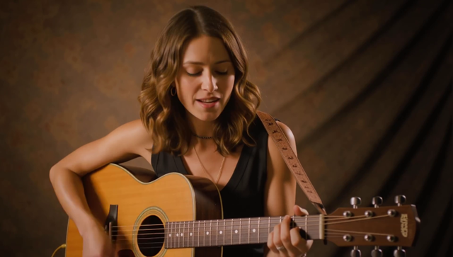

L1 alone: −7.8% (DiT linears only; matmul is CCL-gated so the headline win is modest, as predicted).
L2 step-cut delivers the rest by removing denoise iterations (S1 8→6, S2 3→2) — the bulk of the e2e drop.
Quality — frame 72 (mid-clip)

Baseline (21.03 s)

L1 bf8+LoFi (19.40 s)

L1+L2 step-cut (14.96 s)
No visible degradation. L1 (bf8) is indistinguishable (block PCC 99.89–99.93 vs 0.988 gate).
L2 step-cut output stays sharp and converged — strings, tuning pegs, hair, fabric folds all crisp.
Landed changes (branch smarton/ltx-rt/2026-06-26)
d66ec9a ltx video: DiT-linear quant config (LTX_QUANT, off by default)L1
bf8_b weights + activations, LoFi compute on DiT linears; self_attn_out / cross_attn_out carve-outs stay bf16 to match the fused addcmul epilogue.
LTX_TRACED needs the trace region; native conv1d audio taps need the L1_SMALL pool.
Next
Target met on the loudbox proxy at gen#1. Remaining headroom: L4 (sparse attention) for further Stage-2 cuts;
audio submesh routing (−20% on the audio stage); nsight HW-counter phases for deeper per-zone visibility.
gen#0 (cold) is 21.71 s — steady-state warm gen is the realtime metric.